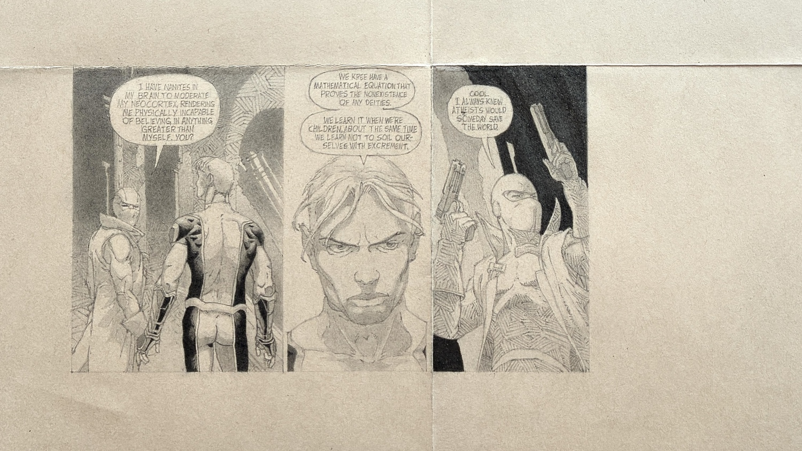

Trash (2012). Pencil on found piece of paper, 33x34cm.
I found a Gagosian exhibition invitation someone had thrown out. Someone had posted this image from a comic book - which one, I do not know, possibly some Marvel/DC spin-off - where two alien soldiers brag how they are incapable of believing in god.
Since the piece of paper with a word "TRASH" on it was very good quality, I draw these comic book panels on to it as faithfully as possible, as I had a habit of doing those days.
I myself am not religious, but at least I have a possiblity to choose. Mathematically two negations make a positive, like a "!" front of an expression negates that expression in most programming languages.